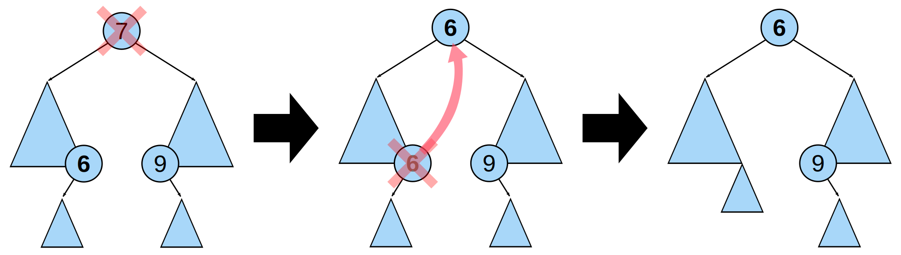
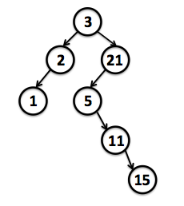

1. Binary Search Tree

A binary search tree of size 9 and depth 3, with 8 at the root.

Deleting a node with two children from a binary search tree. First the rightmost node in the left subtree, the inorder predecessor 6, is identified. Its value is copied into the node being deleted. The inorder predecessor can then be easily deleted because it has at most one child. The same method works symmetrically using the inorder successor labelled 9.
1.1. Create a Constructor for Binary Search Tree
'use strict';
/* Binary Search Tree */
/* reference: https://github.com/nzakas/computer-science-in-javascript/blob/master/data-structures/binary-search-tree/binary-search-tree.js */
var binarySearchTree = function() {
this.root = null;
};
1.2. Contains Method
The contains method accepts a value as an argument and returns true if the value is present in the tree or false if not
binarySearchTree.prototype.contains = function(value){
var found = false;
var current = this.root;
while(!found && current){
if(value < current.value){
current = current.left;
}
else if(value > current.value){
current = current.right;
}
else{
found = true;
}
}
return found;
};
1.3. Insert a new value into the tree:
binarySearchTree.prototype.add = function(value){
var new_node = {value: value, left: null, right: null};
var current;
if(this.root === null){
this.root = new_node;
}
else{
current = this.root;
while(true){
if(value < current.value){
if(current.left === null){
current.left = new_node;
break;
}
else{
current = current.left;
}
}
else if(value > current.value){
if(current.right === null){
current.right = new_node;
break;
}
else{
current = current.right;
}
}
else{
break;
}
}
}
};
1.4. Delete a value from the tree:
binarySearchTree.prototype.delete = function(value){
var found = false;
var parent = null;
var current = this.root;
var childCount, replacement, replacementParent;
while(!found && current){
if(value < current.value){
parent = current;
current = current.left;
}
else if(value > current.value){
parent = current;
current = current.right;
}
else{
found = true;
}
}
if(found){
childCount = (current.left !== null ? 1 : 0) + (current.right !== null ? 1 : 0);
if(current === this.root){
switch (childCount){
case 0:
this.root = null;
break;
case 1:
this.root = (current.left === null ? current.right : current.left);
break;
case 2:
replacement = this.root.left;
while(replacement.right !== null){
replacementParent = replacement;
replacement = replacement.right;
}
if(replacementParent !== null){
replacementParent.right = replacement.left;
replacement.right = this.root.right;
replacement.left = this.root.left;
}
else{
replacement.right = this.root.right;
}
this.root = replacement;
}
}
else{
switch (childCount) {
case 0:
if(current.value < parent.value){
parent.left = null;
}
else{
parent.right = null;
}
break;
case 1:
if(current.value < parent.value){
parent.left = (current.left === null ? current.right : current.left);
}
else{
parent.right = (current.left === null ? current.right : current.left);
}
break;
case 2:
replacement = current.left;
replacementParent = current;
while(replacement.right !== null){
replacementParent = replacement;
replacement = replacement.right;
}
replacementParent.right = replacement.left;
replacement.right = current.right;
replacement.left = current.left;
if(current.value < parent.value) {
parent.left = replacement;
}
else{
parent.right = replacement;
}
}
}
}
};
1.5. Tree Traversal (Depth-first):
1.5.1. In-Order:
binarySearchTree.prototype.traverse = function(process){
/* Depth-First: In-Order */
function inOrder(node){
if(node){
if(node.left !== null){
inOrder(node.left);
}
process.call(this, node);
if(node.right !== null){
inOrder(node.right);
}
}
}
inOrder(this.root);
};
1.5.2. Pre-Order:
binarySearchTree.prototype.traverse = function(process){
/* Depth-First: Pre-Order */
function preOrder(node){
if(node){
process.call(this, node);
if(node.left !== null){
preOrder(node.left);
}
if(node.right !== null){
preOrder(node.right);
}
}
}
preOrder(this.root);
}
1.5.3. Post-Order:
binarySearchTree.prototype.traverse = function(process){
/* Depth-First: Post-Order */
function postOrder(node){
if(node){
if(node.left !== null){
postOrder(node.left);
}
if(node.right !== null){
postOrder(node.right);
}
process.call(this, node);
}
}
postOrder(this.root);
}
1.6. Auxiliary Method: Size, toArray, toString
binarySearchTree.prototype.size = function(){
var length = 0;
this.traverse(function(node){
length++;
});
return length;
};
binarySearchTree.prototype.toArray = function(){
var result = [];
this.traverse(function(node){
result.push(node.value);
});
return result;
};
binarySearchTree.prototype.toString = function(){
return this.toArray().toString();
};
1.7. Test Binary Search Tree:

/* Test inOrder*/
var tree = new binarySearchTree();
tree.add(3);
tree.add(2);
tree.add(21);
tree.add(5);
tree.add(11);
tree.add(1);
tree.add(15);
console.log(tree.size()); // 7
console.log(tree.toArray()); // [1, 2, 3, 5, 11, 15, 21]
console.log(tree.toString()); // 1,2,3,5,11,15,21
console.log(tree.contains(11)); // true
console.log(tree.root); // Object {value: 3, left: Object, right: Object}
console.log(tree.root.left); // Object {value: 2, left: Object, right: null}
console.log(tree.root.left.left); // Object {value: 1, left: null, right: null}
console.log(tree.root.right); // Object {value: 21, left: Object, right: null}
console.log(tree.root.right.left); // Object {value: 5, left: null, right: Object}
console.log(tree.root.right.left.right); // Object {value: 11, left: null, right: Object}
console.log(tree.root.right.left.right.right); // Object {value: 15, left: null, right: null}
tree.delete(11);
console.log(tree.toArray()); // [1, 2, 3, 5, 15, 21]
console.log(tree.contains(11)); // false
2. Binary Heap
2.1. Create a Constructor for Binary Heap:
'use strict';
/* Binary Heap */
var binaryHeap = function(){
this.array = [];
};
2.2. Insert a new value into the tree:
binaryHeap.prototype.add = function(value){
this.array.push(value);
this.bubbleUp(this.array.length - 1, value);
};
2.3. Deleting the root from the heap:
binaryHeap.prototype.deleteRoot = function(){
var lastElement = this.array.pop();
this.array[0] = lastElement;
this.bubbleDown(0, lastElement);
};
2.4. Check Swap:
Compare the new root with its children; if they are in the correct order, stop. If not, swap the element with one of its children and return to the previous step.
2.4.1. Min-Heap:
binaryHeap.prototype.shouldSwap = function(parentValue, childValue){
if(parentValue > childValue){
return true;
}
};
2.4.1. Max-Heap:
binaryHeap.prototype.shouldSwap = function(parentValue, childValue){
if(parentValue < childValue){
return true;
}
};
2.5. Bubble-Up:
binaryHeap.prototype.bubbleUp = function(childIndex, childValue){
if(childIndex > 0){
var parentIndex = Math.floor((childIndex - 1) / 2);
var parentValue = this.array[parentIndex];
if(this.shouldSwap(parentValue, childValue)){
this.array[parentIndex] = childValue;
this.array[childIndex] = parentValue;
this.bubbleUp(parentIndex, childValue);
}
}
};
2.6. Bubble-Down:
2.6.1. Min-Heap:
binaryHeap.prototype.bubbleDown = function(parentIndex, parentValue){
if(parentIndex < this.array.length){
var leftChildIndex = parentIndex * 2 + 1;
var leftChildValue = this.array[leftChildIndex];
var rightChildIndex = parentIndex * 2 + 2;
var rightChildValue = this.array[rightChildIndex];
var childIndex = (leftChildValue < rightChildValue ? leftChildIndex : rightChildIndex);
var childValue = (leftChildValue < rightChildValue ? leftChildValue : rightChildValue);
if(this.shouldSwap(parentValue, childValue)){
this.array[parentIndex] = childValue;
this.array[childIndex] = parentValue;
this.bubbleDown(childIndex, parentValue);
}
}
};
2.6.2. Max-Heap:
binaryHeap.prototype.bubbleDown = function(parentIndex, parentValue){
if(parentIndex < this.array.length){
var leftChildIndex = parentIndex * 2 + 1;
var leftChildValue = this.array[leftChildIndex];
var rightChildIndex = parentIndex * 2 + 2;
var rightChildValue = this.array[rightChildIndex];
var childIndex = (leftChildValue > rightChildValue ? leftChildIndex : rightChildIndex);
var childValue = (leftChildValue > rightChildValue ? leftChildValue : rightChildValue);
if(this.shouldSwap(parentValue, childValue)){
this.array[parentIndex] = childValue;
this.array[childIndex] = parentValue;
this.bubbleDown(childIndex, parentValue);
}
}
};
2.7. Test Binary Heap:
2.7.1. Min-Heap:
var tree = new binaryHeap();
tree.add(3);
tree.add(2);
tree.add(21);
tree.add(5);
tree.add(11);
tree.add(1);
tree.add(15);
console.log(tree.array); // [1, 3, 2, 5, 11, 21, 15]
tree.deleteRoot();
console.log(tree.array); // [2, 3, 15, 5, 11, 21]
2.7.1. Max-Heap:
var tree = new binaryHeap();
tree.add(3);
tree.add(2);
tree.add(21);
tree.add(5);
tree.add(11);
tree.add(1);
tree.add(15);
console.log(tree.array); // [21, 11, 15, 2, 5, 1, 3]
tree.deleteRoot();
console.log(tree.array); // [15, 11, 3, 2, 5, 1]